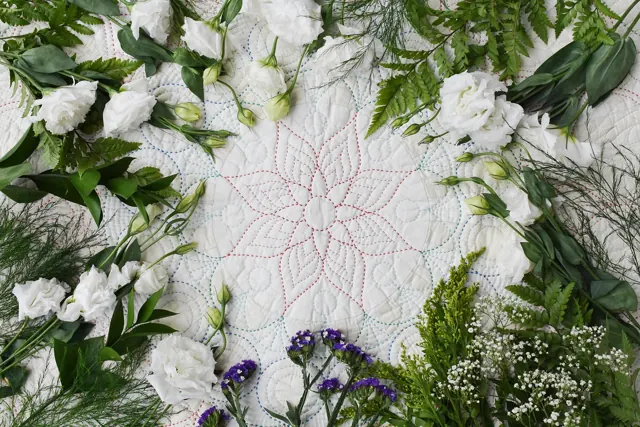

El dikimi pamuk yorgan
Nefes alan, ter tutmayan pamuk dolgu; dükkânda serilip elde dikilir.
2.250 TL'denDolgu: Pamuk
SeçeneklerAna sayfa / Ürünler / Yastıklar / Pamuk yastık
Dükkânda dikilir
Doğal pamuk dolgu, pamuklu yüz; serin tutar, şeklini korur.
850 TL
KDV dahil · kesin fiyat ve stok siparişte ustayla teyit edilir
Haftada bir sabah pencere açıkken silkeleyip havalandırın.
Pamuk dolgu yıkanmaz; kılıf/nevresim ile kullanın, kılıfı yıkayın.
Topaklanırsa dükkânda atılıp yeniden dikilir.

Pamuk yastık neden serin tutar, ne kadar dayanır, kimler için doğru seçimdir? Silikon ve yünle dürüst bir karşılaştırma.
Yastığın yüksekliği ve sertliği uyku pozisyonunuza göre seçilir. Yan, sırt ve yüzüstü yatanlar için pratik ölçüler ve dolgu önerileri.

Çeyize kaç yorgan, kaç yastık konur? Saten mi pamuklu mu? İşlemeli yorgan ne kadar önce sipariş edilmeli? Bir yorgancının listesi.
Sepete ekleyin, ödeme sayfasında bilgilerinizi girin ve 'Siparişi WhatsApp ile tamamla'ya basın. Sipariş özeti ustaya gider; fiyat, ödeme ve teslim günü birlikte netleşir. Kartla online ödeme şu an kapalıdır.
Korkuteli'de dükkândan teslim alabilir ya da elden teslim isteyebilirsiniz. Türkiye geneline kargo: 5.000 TL ve üzeri ücretsiz, altı 250 TL. El dikimi ürünlerin hazırlanma süresi iş yoğunluğuna göre söylenir.
Ambalajı açılmamış ve kullanılmamış ürünlerde teslimden itibaren 14 gün içinde cayma hakkınız vardır. Hijyen nedeniyle ambalajı açılmış yastık/yorgan iadesi kabul edilmeyebilir; ayrıntılar İade & Değişim sayfasında.
Nefes alan, ter tutmayan pamuk dolgu; dükkânda serilip elde dikilir.
2.250 TL'denDolgu: Pamuk
SeçeneklerKüçük yatak ölçüsünde; 1 yaşından büyük çocuklar için yün, pamuk ya da silikon.
500 TL'denDolgu: Pamuk
SeçeneklerEn çok satılan yastık: yumuşak-orta dolgun, yıkanabilir.
300 TL'denDolgu: Silikon
Seçenekler